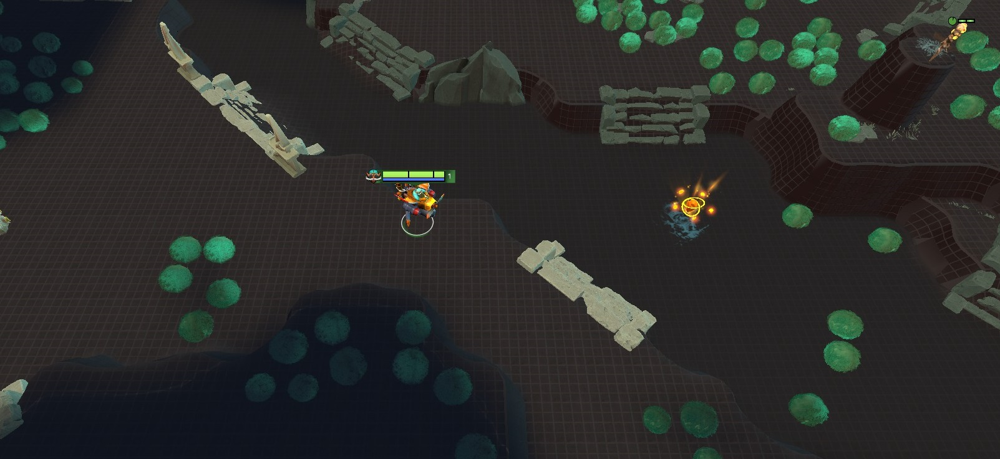

<h1>Simple Dark Terrain</h1>

<p>Dark grid terrain.</p>



<h2>Download link(s)</h2>

<a class="btn btn-primary" href="https://github.com/Egezenn/dota2-minify-community/releases/download/_/Simple.Dark.Terrain.zip">Simple Dark Terrain</a>

<h2>Installation Instructions</h2>

<p>Put the mod onto your Minify installation's <code>mods</code> folder.</p>

<h2>Author</h2>

<a href="https://github.com/robbyz512">Robby</a>

<h2>Maintainer(s):</h2>

<a href="https://github.com/Egezenn">Egezenn</a>
